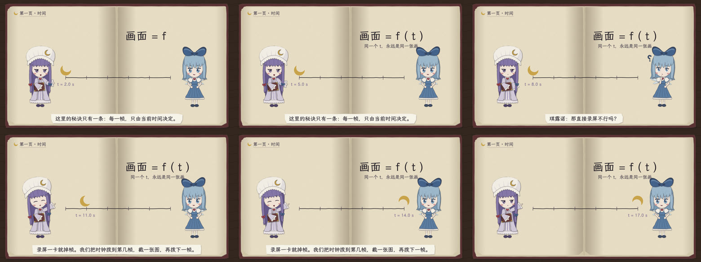
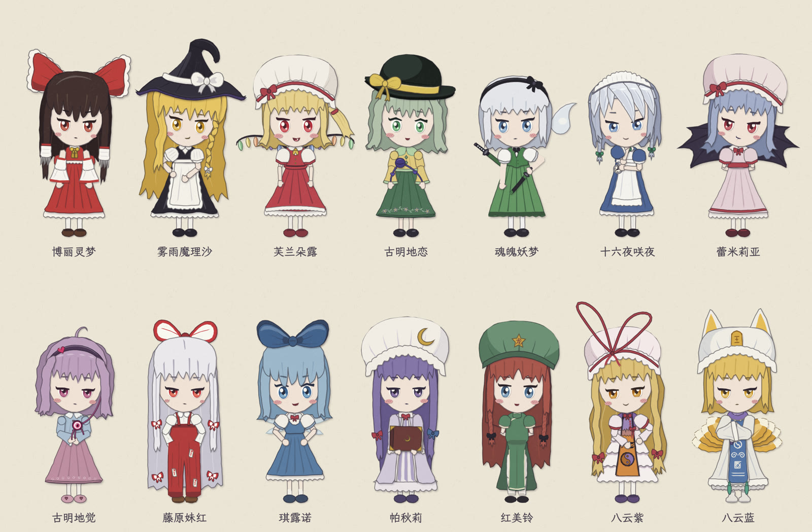

六位角色同台，身高统一。这一段是模板自带的演示场景，写在 src/scenes/1-cast.js 里。
画面是时间的函数
引擎的核心只有一条规则：每一帧只由全片时间 t 决定。不存状态，不用 Math.random()，要「随机」就用带种子的 hash。同一个 t，永远画出同一张图。
所以可以跳到任意一秒，可以把全片切开并行渲染，机器再慢，成片也不会掉帧。下面的月牙在时间轴上的位置，就是一行关键帧插值：
const u = key(tau, [[1.2, 0], [S1T(2), 0], [S1T(2) + 3.5, 1], [S1DUR, 1]], easeIO);
drawMoonIcon(c, lerp(x0, x1, u), y - 62, 44, P.moon, -.5 + u * 3);

同一个场景在 2、5、8、11、14、17 秒的画面（src/scenes/2-time.js）。拖到哪一秒，画面就是哪一秒的样子。
剪纸的边，手绘的抖
画面的质感来自两件小事。剪纸：边不是曲线，是一段一段略带折角的直线，再垫一层软影。手绘：线每秒换八次种子，看起来像在呼吸。两件事都只有几十行代码，不依赖任何素材。
左边是数学上的圆，右边是剪刀剪出来的纸；下面两根线，上面那根固定种子，下面那根每秒换八次。
六个角色，一个身高
帕秋莉、琪露诺、蕾米莉亚、红美铃、八云蓝、八云紫。每个角色都是一组剪纸部件，绕着脖子、肩、肘转动，边缘不抖，「活」来自整片轻晃和投影。全员默认身高 500，并排站才整齐。

全部是 Canvas 代码画的，没有加载任何图片。样张页 character.html 可以看每个角色的全部姿势和表情。
十个现成的特效
从前五集里提炼出十段最好看的动画，每段是一个独立的模块，头注释写了出处、好在哪、怎么复用、怎么改。挂进一集只要一行：
fxScene({ id: 'nap-fall', lines: LINES, over: (c, tau, L) => { /* 叠上自己的角色 */ } });
fxPlay('pinwheel-tiles', c, tau, { box: [x, y, w, h], t0: 1.2, speed: 1.5 });
打盹掉进深睡
冰块按风车形铺满蓝格板
半透明冰板叠层
昼夜转盘与纸雕灯箱视差
看全部十个，每个有联系表和说明 →
声音也是代码
配音走一条很土的链：汉字转拼音，拼音转日文假名，假名交给 AquesTalk 合成，就是「油库里」那种腔调。同时从音频里算出每一帧的响度，让角色按真实的音量张嘴。背景音乐是浏览器里现场合成的一首八音盒小曲。
汉字 → 拼音（pinyin-pro）→ 假名 → AquesTalk → MP3 + 响度包络
出片
出片脚本开几个无界面浏览器，把全片切成几段。每个浏览器逐帧调用同一个 renderAt(t)，导出 JPEG，直接通过管道交给 ffmpeg，不落盘。几段编码完拼接，再混上离线渲染的声音。
92 秒的演示片，在一台 4 核的云端机器上用 3 个并行页面渲染，用了约 135 秒。想要 4K，加一个 --scale 2，建议放到自己的电脑上跑。
开始
git clone https://github.com/fish2lab/touhou-code-video-template
cd touhou-code-video-template
npm install && npm run font
open index.html # 浏览器直接看
npm run render # 出片，需要 ffmpeg或者在 GitHub 上点 Use this template 。然后读 教程 ：从「.mjs 是什么」讲到逐帧出片的原理；再读 经验 ：什么让一集耐看。